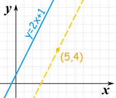
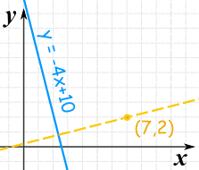
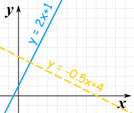

Parallel and Perpendicular Lines
How to use Algebra to find parallel and perpendicular lines.
Parallel Lines
How do we know when two lines are parallel?
Their slopes are the same!
The slope is the value m in the equation of a line: y = mx + b |
 |

Example:
Find the equation of the line that is:
- parallel to y = 2x + 1
- and passes though the point (5,4)
The slope of y=2x+1 is: 2
The parallel line needs to have the same slope of 2.
We can solve it using the "point-slope" equation of a line:
y − y1 = 2(x − x1)
And then put in the point (5,4):
y − 4 = 2(x − 5)
And that answer is OK, but let's also put it in y = mx + b form:
y − 4 = 2x − 10
y = 2x − 6
Vertical Lines
But this does not work for vertical lines ... I explain why at the end.
Not The Same Line
Be careful! They may be the same line (but with a different equation), and so are not parallel.
How do we know if they are really the same line? Check their y-intercepts (where they cross the y-axis) as well as their slope:
Example: is y = 3x + 2 parallel to y − 2 = 3x ?
For y = 3x + 2: the slope is 3, and y-intercept is 2
For y − 2 = 3x: the slope is 3, and y-intercept is 2
In fact they are the same line and so are not parallel
Perpendicular Lines
Two lines are Perpendicular when they meet at a right angle (90°).
To find a perpendicular slope:
When one line has a slope of m, a perpendicular line has a slope of −1m
In other words the negative reciprocal

Example:
Find the equation of the line that is
- perpendicular to y = −4x + 10
- and passes though the point (7,2)
The slope of y=−4x+10 is: −4
The negative reciprocal of that slope is:
m = −1−4 = 14
So the perpendicular line will have a slope of 1/4:
y − y1 = (1/4)(x − x1)
And now put in the point (7,2):
y − 2 = (1/4)(x − 7)
And that answer is OK, but let's also put it in "y=mx+b" form:
y − 2 = x/4 − 7/4
y = x/4 + 1/4
Quick Check of Perpendicular
When we multiply a slope m by its perpendicular slope −1m we get simply −1.
So to quickly check if two lines are perpendicular:
When we multiply their slopes, we get −1
Like this:

Are these two lines perpendicular?
| Line | Slope |
| y = 2x + 1 | 2 |
| y = −0.5x + 4 | −0.5 |
When we multiply the two slopes we get:
2 × (−0.5) = −1
Yes, we got −1, so they are perpendicular.
Vertical Lines
The previous methods work nicely except for a vertical line:

In this case the gradient is undefined (as we cannot divide by 0):
m = yA − yBxA − xB = 4 − 12 − 2 = 30 = undefined
So just rely on the fact that:
- a vertical line is parallel to another vertical line.
- a vertical line is perpendicular to a horizontal line (and vice versa).
Summary
- parallel lines: same slope
- perpendicular lines: negative reciprocal slope (−1/m)